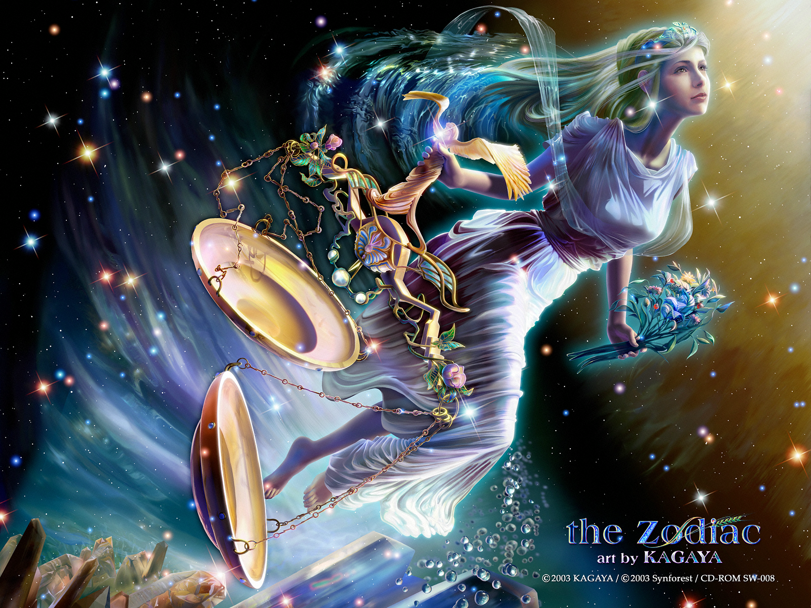
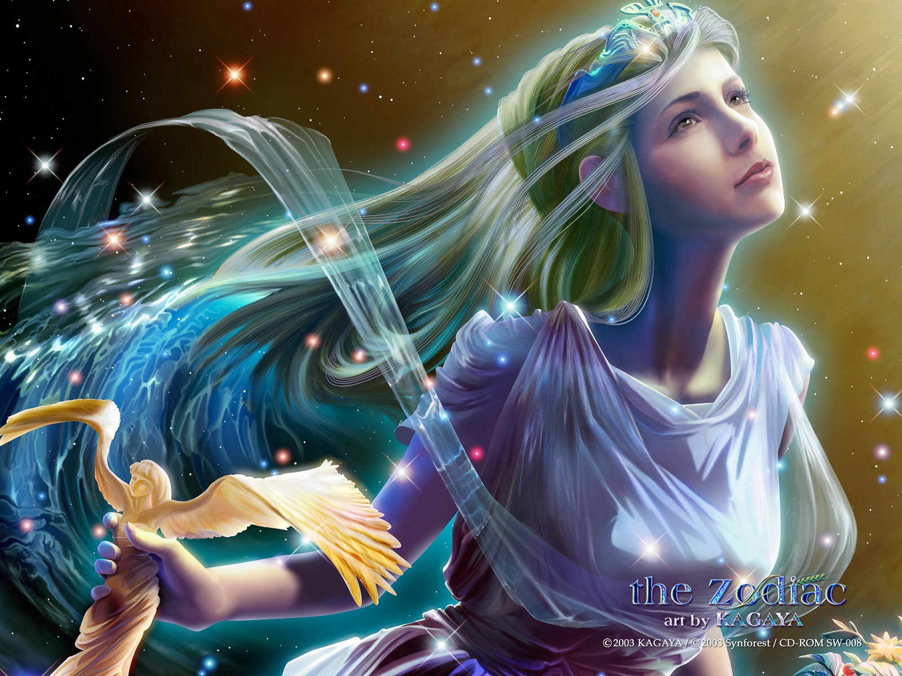
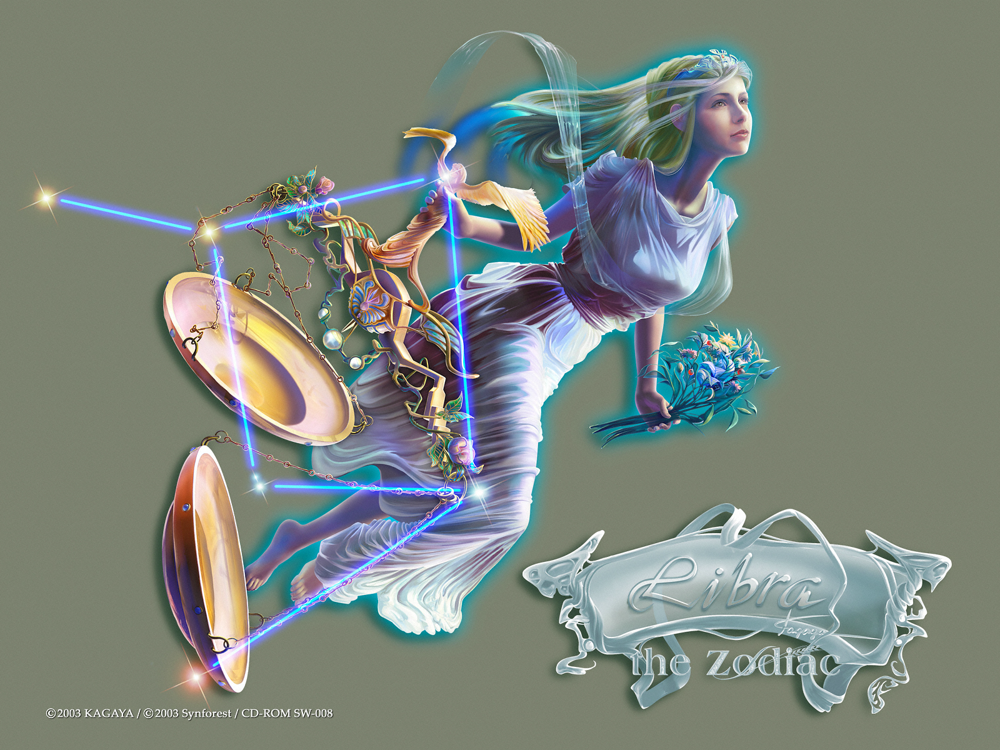
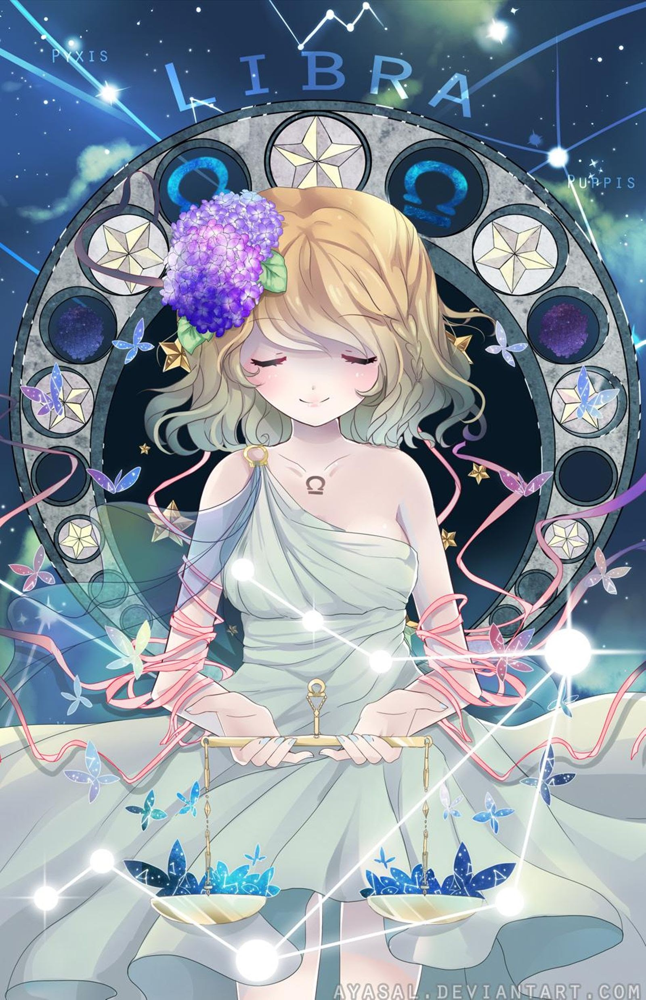

THIÊN BÌNH
Sao bảo hộ của Thiên Bình giống với Bạch Dương. Do người Cung Thiên Bình được sự bảo hộ của Nữ thần Sắc đẹp, do vậy họ rất đa cảm và phẩm chất nhân cách cao thượng
Sự phê phán vượt trội cùng với cảm giác hài hòa, do vậy nhìn nhận cuộc sống của những người này không mang tính cực đoan mà rất quân bình, hầu như họ đều có khả năng thể hiện một khiếu thẩm mỹ mang tính sáng tạo.
Biểu tượng của Cung Thiên Bình là biểu tượng giống chiếc cân, và nó tượng trưng cho sự phán xét công bằng. Do giỏi kìm nén tình cảm và không dễ bị kích động, còn đặc biệt trân trọng mối quan hệ tình bạn tốt, cũng là người giỏi xã giao và cho người khác ấn tượng tốt. Trông bên ngoài họ có dáng vẻ bình tĩnh và lý trí, còn là người rất được tin tưởng. Trong quan hệ xã giao họ đối đãi mọi người bình đẳng như nhau, và còn có tài giải quyết những vấn đề. Ngoài ra, họ giỏi làm đẹp bản thân để thúc đẩy phát triển trong lĩnh vực xã giao.
2, Mô tảNgười Thiên Bình sống tình cảm và luôn thích được yêu. Thật sự, họ có thể thất vọng hay buồn phiền nếu họ thấy mình không được người khác cần đến. Họ hơi lười biếng và không thích đưa ra quyết định. Họ sẽ vui vẽ đi theo dòng chảy đã định sẵn mà không hề có ý định lội ngược dòng. Họ trìu mến, cảm thông và quan tâm sâu sắc đến mọi người. Họ thích giải trí và những món ăn ngon. Họ cũng chính là những người tiêu tiền hoang phí nhất trên thế giới.
Họ thường mơ tưởng có ngày gặp được nàng công chúa hoặc bạch mã hoàng tử mà mình ao ước. Kinh nghiệm, những vấp váp bước đầu, trái tim đau khổ và mộng mơ tan vỡ mà họ gặp phải khi tìm kiếm các nhân vật này thường ảnh hưởng lớn đến cách cử xử và cái nhìn của họ về tương lai. Được yêu hay thất tình đều khiến Thiên Bình thay đổi ghê gớm mặc dù bề ngoài luôn tỏ ra vui vẻ, yêu đời.
Nếu một ngày, người trong mộng của Thiên Bình xuất hiện. Họ sẽ tưng bừng, ríu rít và tươi trẻ như 4 mùa đều là xuân. Họ sẽ hưởng thụ cuộc sống: đến các quán bar, nhà hàng, đi nghỉ ở bãi biển, thưởng thức món ngon, mặc đẹp, và thấy cuộc sống là thiên đường như họ tưởng tượng.
Trong công việc, Thiên Bình trong sạch như pha lê. Do thói quen cố hữu nghĩ lâu xem quyết định gì và như thế nào, họ ít khi sai lầm. Đa số Thiên Bình phát triển mạnh khả năng tập trung cao độ để thấu hiểu những vấn đề sâu sắc và to lớn. Thiên Bình say mê sách, không chỉ nội dung, mà cả hình thức và mùi thơm của sách. Nhiều người cung Thiên Bình có thư viện riêng ở nhà.
3, Tính cách cơ bảnCũng giống như vật tượng trưng, Thiên Bình luôn chính xác như một cái máy, đây cũng chính là nguyên nhân tại sao lại chọn một vật vô tri vô giác để đại diện cho chòm sao. Họ luôn đặt ra rất nhiều những câu “nếu như” trước khi bắt đầu hành động, sau đó lại tiếp tục rất nhiều những câu “nhưng”, cứ suy nghĩ đi nghĩ lại như thế, sau đó mới đưa ra kết luận.
Có thể chắc chắn rằng, kết quả của việc làm như vậy sẽ khiến cho họ có thể thể hiện rất nghiêm cẩn trong tác phong, cứng nhắc giống như một chiếc máy, hơn nữa người khác cũng có thể dự đoán được trước họ sắp nói hoặc làm gì; cũng như vậy, thì biểu hiện bên ngoài và nội hàm bên trong của họ duy trì sự thống nhất với nhau, từ đó khiến cho đầu óc họ ở trong trạng thái có trật tự, những phẩm chất này với thời kì khoa học kỹ thuật - vì khoa học kỹ thuật hiện đại cần có kỹ năng mới, cần có sự phân công hài hoà, phải đổi chủ nghĩa cá nhân.
Họ lặng lẽ mà có hiệu suất cao; hữu hảo và thân thiện; linh hoạt mà có chừng mực, thích hợp tác tập thể. Trong hoạt động xã hội và thương mại phức tạp, họ có thể tìm được những thứ phù hợp với mình. Họ không cảm thấy lạ lùng hoặc khó hiểu về các loại máy móc điện tử phức tạp trong cuộc sống hiện đại, vì vậy họ hầu như có một loại năng lực lý giải làm thế nào thao tác và khống chế những loại máy móc này.
Thiên Bình lúc nào cũng đắn đo cân nhắc trước khi giải quyết các vấn đề, luôn giữ cho mình một trạng thái cân bằng. Điều này khiến cho họ tránh được những xung đột trong công việc và cuộc sống gia đình; khiến cho họ giữ được vị thế trung lập trong các cuộc tranh luận kịch liệt, chủ trương của họ là điều hoà mà không phải là cực đoan.
Dối với họ mà nói, không có bất cứ việc gì là đúng tuyệt đối hoặc sai tuyệt đối, họ cho rằng thấy được mặt tốt của sự việc là hay hơn cả. So với những chòm sao khác, phương thức giao tế này của họ khiến cho người ta ngưỡng mộ, vì vậy cũng được coi là tiêu chí chứng tỏ có tu dưỡng. Nhưng đối với một số người mong muốn có được sự trung thành và ủng hộ toàn diện mà nói, cách làm này của họ có chút quá cổ điển và lạnh lùng, không quan tâm. Đối với những người này mà nói, họ chỉ là những người bàng quan, bình tĩnh đứng nhìn những cuọc cãi vã và đấu tranh đang xảy ra mà không đứng về phía nào.
Chúng ta chỉ cần nghiêm túc một chút về biểu tượng của chòm Thiên Bình, sẽ không khó khăn tưởng tượng ra trang sức và khuynh hướng bố cục nội thất trong gia đình của họ- cân bằng, theo đuổi sự hoà hợp và thống nhất; không trang sức quá mức, những cũng không phải là lôi thôi, chỉnh tề sạch sẽ, coi trọng sự cân bằng, tuy không tỏ ra quá loè loẹt sặc sỡ, nhưng lại tạo cho mọi người một cảm giác đẹp nhã nhặn.
Cho dù nam giới thuộc chòm Thiên Bình rất phong độ, nữ giới xinh đẹp, dù là nam hay nữ thì cách ăn mặc và cử chỉ hành vi của họ cũng đều không tỏ ra quá gợi cảm, vì họ hi vọng mọi người tán thưởng tài năng của họ chứ không phải vì là bề ngoài xinh đẹp. Thậm chí trong gia đình, màu sắc và vật liệu sử dụng trang trí gia đình cũng phải tạo ra một bầu không khí yên tĩnh hài hoà, khiên tốn và đẹp. Hiệu quả chỉnh thể của nó là làm cho người ta có cảm giác ngăn nắp gọn gàng. Nhưng tuyệt đối không giống như một phòng bệnh viện.
Đương nhiên, cách bố cục này không thích hợp với những người có thói quen gác chân lên bàn hay ném mẩu thuốc vào góc nhà, những người như vậy có thể sẽ không được vào nhà họ.
Nhưng tóm lại bạn không cần phải lo lắng, làm như vậy tuy họ đã làm mất đi cơ hội giao tiếp với một số người, nhưng họ đã giành được một bộ phận lớn; đó là những người biết lắng nghe hai mặt của vấn đề và những người thích sông hoà bình, luôn tạo ra không khí làm việc thoải mái, và cung cấp phương án giải quyết hoà bình. Trong thế giới hiện nay, chúng ta rất tiếc phải nói rằng, những người có thể chung sống hoà bình, cùng xây dựng nên các mối quan hệ tốt đẹp có trật tự càng ngày càng ít.
4, Phương thức tư duy, kỹ xảo giao lưu và khả năng thích ứng với công việcChúng ta đều biết, nguyên tắc chủ đạo cơ bản của Thiên Bình là : “cân nhắc lợi hại”. Điều này có thể khiến cho họ tỏ ra do dự ít quyết đoán khi lựa chọn cơ hội, điều này cũng có nghĩa là: Họ có thể sẽ ra quyết định không kịp, làm việc chậm chạp kéo dài.
Mọi người không cần phải nhắc nhở mình “Không phải vội vàng” hoặc “suy nghĩ cẩn thận trước khi hành động”, vì trước khi họ chuẩn bị làm việc thì đã tiến hành đấu tranh tư tưởng kịch liệt về các khả năng có thể xảy ra. Vì vậy cũng không thể phạm sai lầm vì đã hành động khinh suất hoặc qua loa đại khái.
Có một câu tục ngữ phản ánh điều này: Người do dự là người thất bại. Trong cuộc sống đưa ra quyết định nhanh chóng có thể dẫn tới thành công, nhưng cũng có khi dẫn đến thất bại hoàn toàn, hoặc là tuyệt vọng. Cho dù khi biểu đạt tình ý họ dùng những lời lẽ nhẹ nhàng, thái đọ ôn hoà, tỏ ra trí tuệ, nhưng do đặc điểm không muốn đầu tư trên phương diện phong cách hành động đã khiến cho các đồng nghiệp và bạn bè của họ phải đặt câu hỏi.
Trong đầu họ có những câu hỏi như thế này: Họ tán dương chúng ta hay là phản đối chúng ta? và “Lúc nào thì họ đột ngột tuyên bố sẽ đứng về phía nào?”. Những vấn đề này luôn được họ đặt ra, hơn nữa không thể có được câu trả lời, có đôi khi thời gian sẽ trả lời, có lúc thì không có câu trả lời.
Thiên Bình không thể vì vội vàng trình bày quan điểm của mình mà chịu sự bài xích của một số người, họ chỉ lặng lẽ đứng ở một phía mà không hùng hồn giơ khẩu hiệu ở một phía nào. Phương pháp xử thế này sẽ khiến cho họ duy trì tình trạng thấp nhất trong nguyện vọng của họ, và cùng lúc đó họ vẫn tiếp tục “cân nhắc” một cách tỉ mỉ chính xác.
Đương nhiên, họ còn không bị thúc ép xuất phát từ sự tự nguyện, chúng ta cần phải thừa nhận họ có thái độ chân thành hợp tác, suy nghĩ chu đáo cẩn thận, không tỏ vẻ lên mặt. Nhưng họ luôn có một cách làm việc của riêng mình. Họ đã thành công, đạt được mục đích, nhưng xem ra họ lại hoàn toàn không bị tiêu tốn sức lực mấy, đây thật sự là một loại nghệ thuật.
Cách nói chuyện và phương thức giao lưu khác của Thiên Bình cũng là hữu hảo hài hoà (dĩ hòa di quý) mà không phải là xung đột đối lập. Họ không bao giờ cao giọng lớn tiếng- cho dù họ đang trong sự tranh cãi, biện luận kịch liệt vô cùng; họ thường xuyên đưa ra những lời tán dương và bình luận để khiến cho cuộc thảo luận được tiếp tục, chứ không phải là gây ra những trận tranh cãi kéo dài.
Khi biểu đạt quan điểm của họ đều được thông qua phương thức trí tuệ, ngôn từ nhiều hàm nghĩa, để có thể hoà giải, thoả hiệp, hơn nữa không mạo phạm bất cứ ai. Cho dù có lẽ vì tranh cãi, người khác trở nên vô cùng căng thẳng rồi, không thể nhẫn nhịn được nữa rồi, thì Thiên Bình lại không vì vậy mà mất đi lý trí. Vì vậy, họ luôn có nhiều cơ hội giành được thắng lợi hơn là những người dễ nổi cáu hoặc những người dễ xúc động.
DDo tác phong nghiêm cẩn, không muốn cử chỉ hành vi của mình có khiếm khuyết; do luôn ý thức được trách nhiệm xã hội của mình và nhu cầu cấp thiết trở thành trụ cột xã hội người người tôn trọng, Thiên Bình dù là trong cuộc sống xã hội hay riêng tư đều đang theo đuổi cuộc sống hài hoà. Họ sẽ tiêu tốn phần lớn tinh lực của họ vào công việc, vì trong công việc, họ mới thật sự phát triển đựơc thẩm mỹ quan và năng lực tư duy logic của họ, khả năng có hứng thú đối với bất cứ sự vật gì có thể được phát huy và thể hiện hết mức.
Sự phát huy và khả năng thể hiện này đặc biệt nổi bật khi họ cùng làm việc trong những hoàn cảnh tiêu chuẩn theo ý họ. Đối với những người yêu cầu đối phương phải suy xét vấn đề một cách lý trí, có năng lực làm trọng tài, công bằng, có thể nhẫn nại lắng nghe người khác trình bày, thì Thiên Bình là sự lựa chọn tốt nhất của họ, là người bạn phù hợp nhất, là người hợp tác tốt nhất của họ.
Thiên Bình khi tìm công việc nhất định phải nhớ điều này. Công việc của bạn cần phải dành cho bạn đủ thời gian để bình tĩnh suy nghĩ, hơn nữa không thể để cho bạn một mình quyết định một quyết sách trọng đại; cần phải tránh xa những môi trường làm việc bẩn thỉu, òn ào, vì nó khiến cho bạn không thể làm việc độc lập, những nghề nghiệp chú trọng đến lễ tiết, giao tiếp với đám đông, xử sự công bằng sẽ làm tăng thêm lòng tự tôn của bạn và những tiềm năng đạt được thành công của bạn, còn những nghề cần phải đùn đẩy trách nhiệm, thậm chí hứa hẹn bừa bãi sẽ khiến cho bạn có được những kết quả ngược lại.